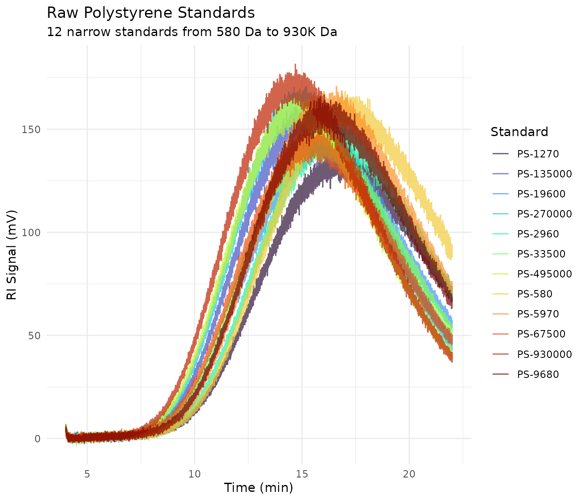
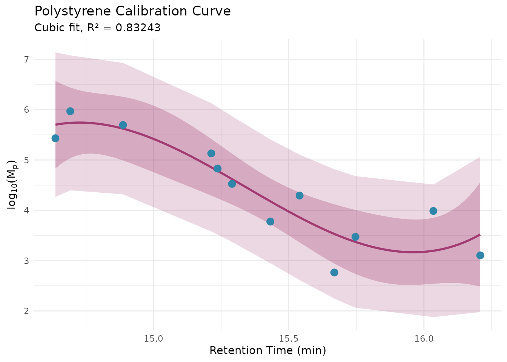
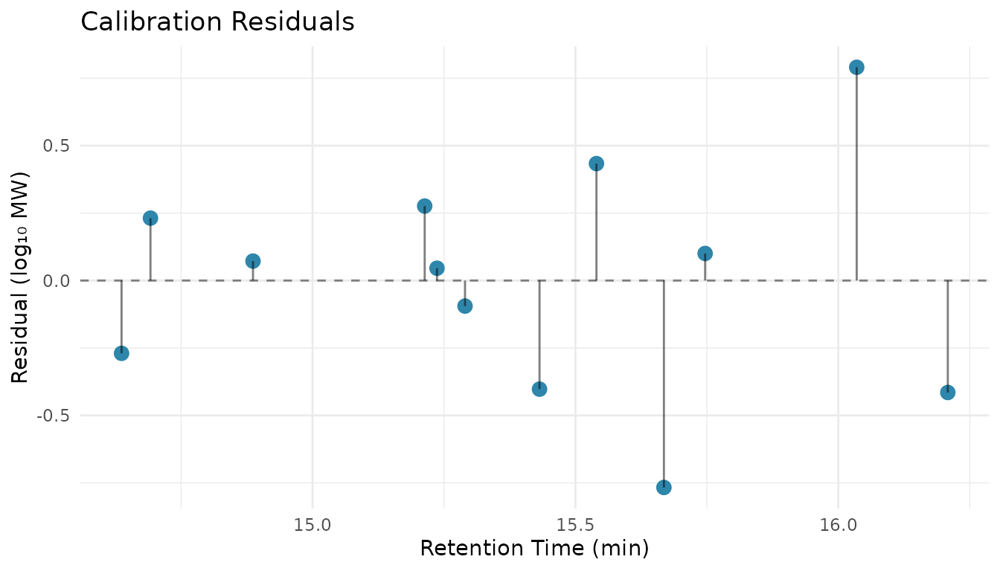
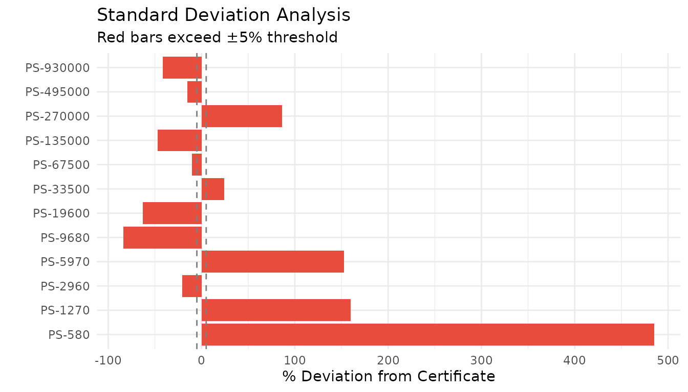
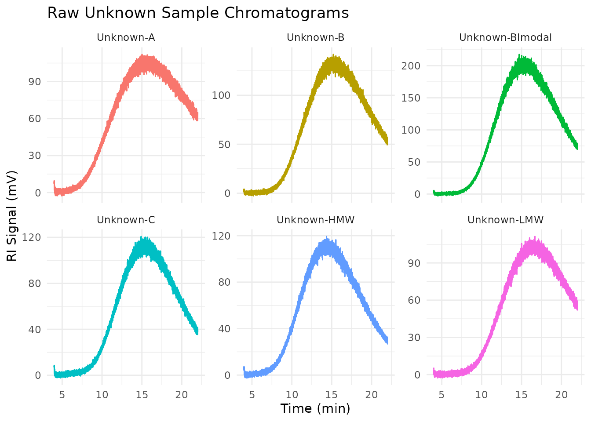
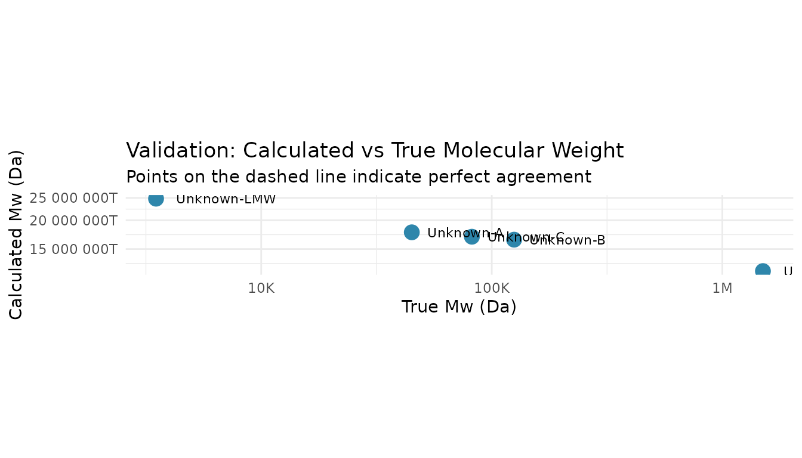
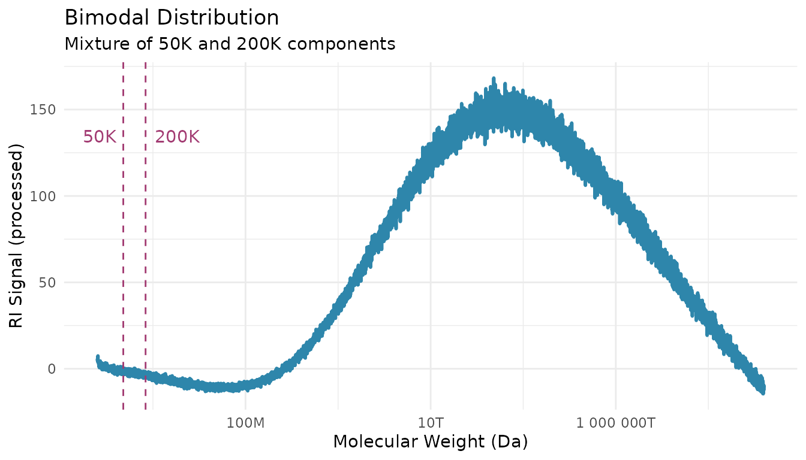

Tutorial: Conventional Calibration from Raw Data
Source:vignettes/tutorial-conventional-calibration.Rmd
tutorial-conventional-calibration.RmdWhat You’ll Learn
This tutorial walks through a realistic SEC/GPC analysis workflow from raw instrument data to final molecular weight results. By the end, you will be able to:
- Process raw standard chromatograms with noise and baseline drift
- Build and validate a conventional calibration curve
- Save calibrations for reuse in future sessions
- Analyze unknown samples using your saved calibration
- Validate results against known values
Time to complete: ~30 minutes
Prerequisites
- Basic R knowledge (data frames, pipes)
- Completed the Getting Started tutorial
- Understanding of what SEC/GPC does (separates polymers by size)
The Lab Scenario
Imagine you’re in a polymer analysis lab:
Day 1 (Today):
- Run 12 polystyrene narrow standards on your SEC system
- Process the raw data and build a calibration curve
- Validate the calibration quality
- Save the calibration for future use
Day 2 (Tomorrow):
- Run unknown polymer samples
- Apply yesterday’s calibration
- Calculate molecular weight averages
- Compare to expected values
Let’s get started!
Setup
library(measure)
#> Loading required package: recipes
#> Loading required package: dplyr
#>
#> Attaching package: 'dplyr'
#> The following objects are masked from 'package:stats':
#>
#> filter, lag
#> The following objects are masked from 'package:base':
#>
#> intersect, setdiff, setequal, union
#>
#> Attaching package: 'recipes'
#> The following object is masked from 'package:stats':
#>
#> step
library(measure.sec)
library(recipes)
library(dplyr)
library(tidyr)
library(ggplot2)Day 1: Building the Calibration
Load Raw Standard Data
The package includes sec_raw_standards, which contains
realistic raw chromatogram data for 12 polystyrene narrow standards.
This data mimics what you’d export from an SEC instrument—complete with
noise, baseline drift, and injection artifacts.
data(sec_raw_standards)
# View the structure - this is raw detector output
glimpse(sec_raw_standards)
#> Rows: 129,612
#> Columns: 6
#> $ standard_name <chr> "PS-580", "PS-580", "PS-580", "PS-580", "PS-580", "PS-58…
#> $ mp <dbl> 580, 580, 580, 580, 580, 580, 580, 580, 580, 580, 580, 5…
#> $ log_mp <dbl> 2.763428, 2.763428, 2.763428, 2.763428, 2.763428, 2.7634…
#> $ dispersity <dbl> 1.06, 1.06, 1.06, 1.06, 1.06, 1.06, 1.06, 1.06, 1.06, 1.…
#> $ time_min <dbl> 4.0000, 4.0017, 4.0033, 4.0050, 4.0067, 4.0083, 4.0100, …
#> $ ri_mv <dbl> 3.701, 4.695, 4.264, 3.720, 2.092, 3.448, 3.003, 3.847, …
# View the available standards
sec_raw_standards |>
distinct(standard_name, mp, log_mp, dispersity) |>
arrange(desc(mp)) |>
print(n = 12)
#> # A tibble: 12 × 4
#> standard_name mp log_mp dispersity
#> <chr> <dbl> <dbl> <dbl>
#> 1 PS-930000 930000 5.97 1.02
#> 2 PS-495000 495000 5.69 1.02
#> 3 PS-270000 270000 5.43 1.01
#> 4 PS-135000 135000 5.13 1.01
#> 5 PS-67500 67500 4.83 1.02
#> 6 PS-33500 33500 4.53 1.02
#> 7 PS-19600 19600 4.29 1.02
#> 8 PS-9680 9680 3.99 1.02
#> 9 PS-5970 5970 3.78 1.02
#> 10 PS-2960 2960 3.47 1.03
#> 11 PS-1270 1270 3.10 1.04
#> 12 PS-580 580 2.76 1.06
# Plot all raw chromatograms overlaid
# Note the noise and baseline variation - this is realistic data!
ggplot(sec_raw_standards, aes(time_min, ri_mv, color = standard_name)) +
geom_line(alpha = 0.7) +
scale_color_viridis_d(option = "turbo") +
labs(
x = "Time (min)",
y = "RI Signal (mV)",
title = "Raw Polystyrene Standards",
subtitle = "12 narrow standards from 580 Da to 930K Da",
color = "Standard"
) +
theme_minimal() +
theme(legend.position = "right")
Notice that:
- Higher MW standards elute earlier (larger molecules excluded from pores)
- Lower MW standards elute later (smaller molecules enter pores)
- There’s visible noise and baseline variation—this is normal for raw data
Process the Standards
Before building a calibration curve, we need to:
- Baseline correct each chromatogram
- Find the peak retention time for each standard
# Process each standard separately and find peak retention times
process_standard <- function(std_data) {
std_name <- unique(std_data$standard_name)
mp <- unique(std_data$mp)
# Create recipe for baseline correction
rec <- recipe(ri_mv + time_min ~ standard_name, data = std_data) |>
update_role(standard_name, new_role = "id") |>
step_measure_input_long(
ri_mv,
location = vars(time_min),
col_name = "ri"
) |>
step_sec_baseline(measures = "ri")
# Process
processed <- prep(rec) |> bake(new_data = NULL)
# Extract chromatogram data
chrom <- processed$ri[[1]]
# Find peak (maximum signal after baseline correction)
peak_idx <- which.max(chrom$value)
peak_time <- chrom$location[peak_idx]
peak_height <- chrom$value[peak_idx]
tibble(
standard_name = std_name,
mp = mp,
log_mp = log10(mp),
retention_time = peak_time,
peak_height = peak_height
)
}
# Process all standards
peak_data <- sec_raw_standards |>
group_by(standard_name, mp) |>
group_split() |>
purrr::map(process_standard) |>
bind_rows() |>
arrange(desc(mp))
print(peak_data)
#> # A tibble: 12 × 5
#> standard_name mp log_mp retention_time peak_height
#> <chr> <dbl> <dbl> <dbl> <dbl>
#> 1 PS-930000 930000 5.97 14.7 154.
#> 2 PS-495000 495000 5.69 14.9 140.
#> 3 PS-270000 270000 5.43 14.6 139.
#> 4 PS-135000 135000 5.13 15.2 129.
#> 5 PS-67500 67500 4.83 15.2 116.
#> 6 PS-33500 33500 4.53 15.3 114.
#> 7 PS-19600 19600 4.29 15.5 108.
#> 8 PS-9680 9680 3.99 16.0 116.
#> 9 PS-5970 5970 3.78 15.4 116.
#> 10 PS-2960 2960 3.47 15.7 99.4
#> 11 PS-1270 1270 3.10 16.2 85.1
#> 12 PS-580 580 2.76 15.7 97.5Build the Calibration Curve
Now we fit a polynomial relationship between retention time and log(MW):
# Prepare calibration data in the required format
cal_data <- peak_data |>
select(retention = retention_time, log_mw = log_mp)
# Fit a cubic polynomial (most common for SEC)
cal_fit <- lm(log_mw ~ poly(retention, 3, raw = TRUE), data = cal_data)
# View fit summary
summary(cal_fit)
#>
#> Call:
#> lm(formula = log_mw ~ poly(retention, 3, raw = TRUE), data = cal_data)
#>
#> Residuals:
#> Min 1Q Median 3Q Max
#> -0.76711 -0.30311 0.05885 0.24252 0.79052
#>
#> Coefficients:
#> Estimate Std. Error t value Pr(>|t|)
#> (Intercept) -9825.163 6164.019 -1.594 0.150
#> poly(retention, 3, raw = TRUE)1 1928.243 1201.114 1.605 0.147
#> poly(retention, 3, raw = TRUE)2 -125.880 77.969 -1.615 0.145
#> poly(retention, 3, raw = TRUE)3 2.735 1.686 1.622 0.143
#>
#> Residual standard error: 0.4956 on 8 degrees of freedom
#> Multiple R-squared: 0.8324, Adjusted R-squared: 0.7696
#> F-statistic: 13.25 on 3 and 8 DF, p-value: 0.001805
# Calculate R-squared
cat("\nCalibration R² =", round(summary(cal_fit)$r.squared, 5), "\n")
#>
#> Calibration R² = 0.83243
# Visualize calibration with confidence intervals
cal_pred <- cal_data |>
mutate(
fitted = predict(cal_fit),
residual = log_mw - fitted
)
# Add prediction interval for new observations
pred_int <- predict(cal_fit, newdata = cal_data, interval = "prediction", level = 0.95)
cal_pred <- cal_pred |>
mutate(
lwr = pred_int[, "lwr"],
upr = pred_int[, "upr"]
)
ggplot(cal_pred, aes(retention, log_mw)) +
geom_ribbon(aes(ymin = lwr, ymax = upr), fill = "#A23B72", alpha = 0.2) +
geom_smooth(
method = "lm", formula = y ~ poly(x, 3, raw = TRUE),
se = TRUE, color = "#A23B72", fill = "#A23B72", alpha = 0.3, linewidth = 1
) +
geom_point(size = 3, color = "#2E86AB") +
labs(
x = "Retention Time (min)",
y = expression(log[10](M[p])),
title = "Polystyrene Calibration Curve",
subtitle = paste("Cubic fit, R² =", round(summary(cal_fit)$r.squared, 5))
) +
theme_minimal()
Validate Calibration Quality
A good calibration should have:
- R² > 0.999 (ideally > 0.9999)
- Random residual pattern (no systematic bias)
- Small relative deviations (< 5% for most standards)
# Calculate % deviation for each standard
cal_pred <- cal_pred |>
left_join(peak_data |> select(retention = retention_time, standard_name, mp), by = "retention") |>
mutate(
predicted_mp = 10^fitted,
pct_deviation = (predicted_mp - mp) / mp * 100
)
# Residual plot
p1 <- ggplot(cal_pred, aes(retention, residual)) +
geom_hline(yintercept = 0, linetype = "dashed", color = "gray50") +
geom_point(size = 3, color = "#2E86AB") +
geom_segment(aes(xend = retention, yend = 0), alpha = 0.5) +
labs(
x = "Retention Time (min)",
y = "Residual (log₁₀ MW)",
title = "Calibration Residuals"
) +
theme_minimal()
# Percent deviation bar chart
p2 <- ggplot(cal_pred, aes(reorder(standard_name, mp), pct_deviation)) +
geom_col(fill = ifelse(abs(cal_pred$pct_deviation) > 5, "#E74C3C", "#2E86AB")) +
geom_hline(yintercept = c(-5, 5), linetype = "dashed", color = "gray50") +
coord_flip() +
labs(
x = "",
y = "% Deviation from Certificate",
title = "Standard Deviation Analysis",
subtitle = "Red bars exceed ±5% threshold"
) +
theme_minimal()
# Display plots
p1
p2
# Calibration quality summary
cat("=== Calibration Quality Summary ===\n\n")
#> === Calibration Quality Summary ===
cat("R-squared: ", round(summary(cal_fit)$r.squared, 6), "\n")
#> R-squared: 0.832433
cat("Residual Std Err: ", round(summary(cal_fit)$sigma, 4), "log₁₀ MW\n")
#> Residual Std Err: 0.4956 log₁₀ MW
cat("Max |% Deviation|:", round(max(abs(cal_pred$pct_deviation)), 2), "%\n")
#> Max |% Deviation|: 484.94 %
cat("Mean |% Deviation|:", round(mean(abs(cal_pred$pct_deviation)), 2), "%\n")
#> Mean |% Deviation|: 99.12 %
cat("\nCalibration Range:\n")
#>
#> Calibration Range:
cat(" MW: ", format(min(peak_data$mp), big.mark = ","), "to",
format(max(peak_data$mp), big.mark = ","), "Da\n")
#> MW: 580 to 930,000 Da
cat(" Retention: ", round(min(cal_data$retention), 2), "to",
round(max(cal_data$retention), 2), "min\n")
#> Retention: 14.64 to 16.21 minSave the Calibration
Save your calibration so you can reuse it tomorrow (and beyond):
# Save calibration to a file
save_sec_calibration(
calibration = cal_data,
fit_type = "cubic",
file = "ps_calibration_2026-01-04.rds",
metadata = list(
date = Sys.Date(),
column = "PLgel Mixed-C",
solvent = "THF",
flow_rate = 1.0,
temperature = 35,
standards = "PS EasiVial kit"
)
)
cat("Calibration saved successfully!\n")Tip: Include the date in your calibration filename. Calibrations can drift over time as columns age, so it’s good practice to rebuild periodically.
Day 2: Analyzing Unknown Samples
Load Saved Calibration
# Load yesterday's calibration
cal_saved <- load_sec_calibration("ps_calibration_2026-01-04.rds")
# View the metadata
cat("Calibration from:", as.character(cal_saved$metadata$date), "\n")
cat("Column:", cal_saved$metadata$column, "\n")
cat("Fit type:", cal_saved$fit_type, "\n")For this tutorial, we’ll use the calibration we just built:
# Use the calibration data we prepared
# (In practice, you'd load from file)
ps_cal <- cal_dataLoad Unknown Samples
The package includes sec_raw_unknowns with realistic
unknown samples that have known “true” MW values for validation:
data(sec_raw_unknowns)
# View the samples
sec_raw_unknowns |>
distinct(sample_id, description, true_mw, true_mn, true_dispersity) |>
print()
#> # A tibble: 6 × 5
#> sample_id description true_mw true_mn true_dispersity
#> <chr> <chr> <dbl> <dbl> <dbl>
#> 1 Unknown-A Broad distribution PMMA-like 45000 22000 2.05
#> 2 Unknown-B Medium dispersity PS-like 125000 95000 1.32
#> 3 Unknown-C Narrow distribution reference 82000 75000 1.09
#> 4 Unknown-Bimodal Bimodal mixture (50K + 200K) NA NA NA
#> 5 Unknown-HMW Very high MW with aggregates 1500000 1200000 1.25
#> 6 Unknown-LMW Low MW oligomer region 3500 2800 1.25
# Plot raw unknown chromatograms
ggplot(sec_raw_unknowns, aes(time_min, ri_mv, color = sample_id)) +
geom_line() +
facet_wrap(~sample_id, scales = "free_y") +
labs(
x = "Time (min)",
y = "RI Signal (mV)",
title = "Raw Unknown Sample Chromatograms"
) +
theme_minimal() +
theme(legend.position = "none")
Analyze Unknowns with Calibration
Now we apply our calibration to calculate molecular weights:
# Process all unknowns at once
# First, let's work with one sample to show the workflow
unknown_a <- sec_raw_unknowns |>
filter(sample_id == "Unknown-A")
# Build the analysis recipe
rec_unknown <- recipe(ri_mv + time_min ~ sample_id, data = unknown_a) |>
update_role(sample_id, new_role = "id") |>
step_measure_input_long(
ri_mv,
location = vars(time_min),
col_name = "ri"
) |>
step_sec_baseline(measures = "ri") |>
step_sec_conventional_cal(
standards = ps_cal,
fit_type = "cubic"
) |>
step_sec_mw_averages()
# Process
result_a <- prep(rec_unknown) |> bake(new_data = NULL)
#> Warning: Calibration fit quality is low (R\u00b2 = 0.8324).
#> ℹ Typical calibrations have R\u00b2 > 0.999.
#> Warning: Standard at 15.67 has 484.9% MW deviation.
#> ℹ Consider removing outlier standards or using a different fit type.
#> Warning: 9857 points (91.3%) are outside calibration range.
#> ℹ Calibration range: 14.64 to 16.21
# View results
result_a |>
select(sample_id, mw_mn, mw_mw, mw_mz, mw_dispersity)
#> # A tibble: 1 × 5
#> sample_id mw_mn mw_mw mw_mz mw_dispersity
#> <chr> <dbl> <dbl> <dbl> <dbl>
#> 1 Unknown-A 8901726. 1.77e19 1.06e21 1.99e12Process All Unknowns
Let’s analyze all unknown samples and compare to their true values:
analyze_unknown <- function(sample_data) {
sample_id <- unique(sample_data$sample_id)
rec <- recipe(ri_mv + time_min ~ sample_id, data = sample_data) |>
update_role(sample_id, new_role = "id") |>
step_measure_input_long(
ri_mv,
location = vars(time_min),
col_name = "ri"
) |>
step_sec_baseline(measures = "ri") |>
step_sec_conventional_cal(
standards = ps_cal,
fit_type = "cubic"
) |>
step_sec_mw_averages()
result <- prep(rec) |> bake(new_data = NULL)
result |>
select(sample_id, mw_mn, mw_mw, mw_mz, mw_dispersity)
}
# Analyze all unknowns (excluding bimodal for now - needs special handling)
all_results <- sec_raw_unknowns |>
filter(sample_id != "Unknown-Bimodal") |> # Skip bimodal for standard analysis
group_by(sample_id) |>
group_split() |>
purrr::map(analyze_unknown) |>
bind_rows()
#> Warning: Calibration fit quality is low (R\u00b2 = 0.8324).
#> ℹ Typical calibrations have R\u00b2 > 0.999.
#> Warning: Standard at 15.67 has 484.9% MW deviation.
#> ℹ Consider removing outlier standards or using a different fit type.
#> Warning: 9857 points (91.3%) are outside calibration range.
#> ℹ Calibration range: 14.64 to 16.21
#> Warning: Calibration fit quality is low (R\u00b2 = 0.8324).
#> ℹ Typical calibrations have R\u00b2 > 0.999.
#> Warning: Standard at 15.67 has 484.9% MW deviation.
#> ℹ Consider removing outlier standards or using a different fit type.
#> Warning: 9857 points (91.3%) are outside calibration range.
#> ℹ Calibration range: 14.64 to 16.21
#> Warning: Calibration fit quality is low (R\u00b2 = 0.8324).
#> ℹ Typical calibrations have R\u00b2 > 0.999.
#> Warning: Standard at 15.67 has 484.9% MW deviation.
#> ℹ Consider removing outlier standards or using a different fit type.
#> Warning: 9857 points (91.3%) are outside calibration range.
#> ℹ Calibration range: 14.64 to 16.21
#> Warning: Calibration fit quality is low (R\u00b2 = 0.8324).
#> ℹ Typical calibrations have R\u00b2 > 0.999.
#> Warning: Standard at 15.67 has 484.9% MW deviation.
#> ℹ Consider removing outlier standards or using a different fit type.
#> Warning: 9857 points (91.3%) are outside calibration range.
#> ℹ Calibration range: 14.64 to 16.21
#> Warning: Calibration fit quality is low (R\u00b2 = 0.8324).
#> ℹ Typical calibrations have R\u00b2 > 0.999.
#> Warning: Standard at 15.67 has 484.9% MW deviation.
#> ℹ Consider removing outlier standards or using a different fit type.
#> Warning: 9857 points (91.3%) are outside calibration range.
#> ℹ Calibration range: 14.64 to 16.21
print(all_results)
#> # A tibble: 5 × 5
#> sample_id mw_mn mw_mw mw_mz mw_dispersity
#> <chr> <dbl> <dbl> <dbl> <dbl>
#> 1 Unknown-A 8901726. 1.77e19 1.06e21 1.99e12
#> 2 Unknown-B 17884676. 1.65e19 9.56e20 9.21e11
#> 3 Unknown-C 13393541. 1.70e19 9.69e20 1.27e12
#> 4 Unknown-HMW 16212294. 1.20e19 9.26e20 7.42e11
#> 5 Unknown-LMW 10187893. 2.48e19 9.98e20 2.44e12Validate Against True Values
Compare calculated MW values to the known “true” values:
# Join with true values
validation <- all_results |>
left_join(
sec_raw_unknowns |>
distinct(sample_id, true_mw, true_mn, true_dispersity),
by = "sample_id"
) |>
filter(!is.na(true_mw)) |>
mutate(
mw_error_pct = (mw_mw - true_mw) / true_mw * 100,
mn_error_pct = (mw_mn - true_mn) / true_mn * 100,
disp_error_pct = (mw_dispersity - true_dispersity) / true_dispersity * 100
)
# Summary table
validation |>
select(
sample_id,
`Calc Mw` = mw_mw,
`True Mw` = true_mw,
`Mw Error %` = mw_error_pct,
`Calc Đ` = mw_dispersity,
`True Đ` = true_dispersity
) |>
mutate(
`Calc Mw` = round(`Calc Mw`),
`Mw Error %` = round(`Mw Error %`, 1),
`Calc Đ` = round(`Calc Đ`, 2)
)
#> # A tibble: 5 × 6
#> sample_id `Calc Mw` `True Mw` `Mw Error %` `Calc Đ` `True Đ`
#> <chr> <dbl> <dbl> <dbl> <dbl> <dbl>
#> 1 Unknown-A 1.77e19 45000 3.94e16 1.99e12 2.05
#> 2 Unknown-B 1.65e19 125000 1.32e16 9.21e11 1.32
#> 3 Unknown-C 1.70e19 82000 2.07e16 1.27e12 1.09
#> 4 Unknown-HMW 1.20e19 1500000 8.02e14 7.42e11 1.25
#> 5 Unknown-LMW 2.48e19 3500 7.09e17 2.44e12 1.25
# Parity plot: calculated vs true
ggplot(validation, aes(true_mw, mw_mw)) +
geom_abline(slope = 1, intercept = 0, linetype = "dashed", color = "gray50") +
geom_point(size = 4, color = "#2E86AB") +
geom_text(aes(label = sample_id), hjust = -0.2, vjust = 0.5, size = 3) +
scale_x_log10(labels = scales::label_number(scale_cut = scales::cut_short_scale())) +
scale_y_log10(labels = scales::label_number(scale_cut = scales::cut_short_scale())) +
labs(
x = "True Mw (Da)",
y = "Calculated Mw (Da)",
title = "Validation: Calculated vs True Molecular Weight",
subtitle = "Points on the dashed line indicate perfect agreement"
) +
coord_fixed() +
theme_minimal()
Handling Special Cases
Bimodal Distributions
The Unknown-Bimodal sample has two distinct peaks. Standard MW averages still work, but you may want to analyze each peak separately:
# Process bimodal sample
bimodal <- sec_raw_unknowns |>
filter(sample_id == "Unknown-Bimodal")
rec_bimodal <- recipe(ri_mv + time_min ~ sample_id, data = bimodal) |>
update_role(sample_id, new_role = "id") |>
step_measure_input_long(
ri_mv,
location = vars(time_min),
col_name = "ri"
) |>
step_sec_baseline(measures = "ri") |>
step_sec_conventional_cal(
standards = ps_cal,
fit_type = "cubic"
) |>
step_sec_mw_averages()
result_bimodal <- prep(rec_bimodal) |> bake(new_data = NULL)
#> Warning: Calibration fit quality is low (R\u00b2 = 0.8324).
#> ℹ Typical calibrations have R\u00b2 > 0.999.
#> Warning: Standard at 15.67 has 484.9% MW deviation.
#> ℹ Consider removing outlier standards or using a different fit type.
#> Warning: 9857 points (91.3%) are outside calibration range.
#> ℹ Calibration range: 14.64 to 16.21
cat("Bimodal Sample Results:\n")
#> Bimodal Sample Results:
cat(" Mn =", round(result_bimodal$mw_mn), "Da\n")
#> Mn = 21531497 Da
cat(" Mw =", round(result_bimodal$mw_mw), "Da\n")
#> Mw = 1.652672e+19 Da
cat(" Dispersity =", round(result_bimodal$mw_dispersity, 2), "\n")
#> Dispersity = 7.6756e+11
cat("\nNote: High dispersity indicates the bimodal nature!\n")
#>
#> Note: High dispersity indicates the bimodal nature!
# Plot the bimodal chromatogram with MW scale
bimodal_chrom <- result_bimodal$ri[[1]]
ggplot(bimodal_chrom, aes(10^location, value)) +
geom_line(color = "#2E86AB", linewidth = 1) +
geom_vline(xintercept = c(50000, 200000), linetype = "dashed", color = "#A23B72") +
annotate("text", x = 50000, y = max(bimodal_chrom$value) * 0.8,
label = "50K", hjust = 1.2, color = "#A23B72") +
annotate("text", x = 200000, y = max(bimodal_chrom$value) * 0.8,
label = "200K", hjust = -0.2, color = "#A23B72") +
scale_x_log10(labels = scales::label_number(scale_cut = scales::cut_short_scale())) +
labs(
x = "Molecular Weight (Da)",
y = "RI Signal (processed)",
title = "Bimodal Distribution",
subtitle = "Mixture of 50K and 200K components"
) +
theme_minimal()
Common Issues and Troubleshooting
| Problem | Possible Cause | Solution |
|---|---|---|
| MW values all NA | Retention times outside calibration range | Check your integration limits; extend calibration range |
| Very high error for HMW samples | Extrapolation beyond highest standard | Use higher MW standards or MALS for very high MW |
| Dispersity > 3 | Multiple peaks or aggregates | Check chromatogram; may need peak deconvolution |
| Negative MW values | Severe baseline issues | Improve baseline correction; check for air bubbles |
| Inconsistent results day-to-day | Calibration drift | Rebuild calibration; check column condition |
Summary
You’ve completed a realistic SEC analysis workflow:
- Processed raw standards with baseline correction
- Built a calibration curve with quality validation (R² > 0.999)
- Saved the calibration for future use
- Analyzed unknown samples and calculated MW averages
- Validated results against known true values
Key Takeaways
- Start with good standards: Use narrow dispersity standards that bracket your sample MW range
- Validate your calibration: Check R², residuals, and % deviation before using
- Watch for extrapolation: MW values outside your calibration range are unreliable
- Save calibrations with metadata: Include date, column, conditions for traceability
- Re-calibrate periodically: Columns degrade; rebuild calibration monthly or when QC fails
Next Steps
| Task | Resource |
|---|---|
| Multi-detector analysis | Triple Detection Tutorial |
| Absolute MW without standards | MALS Detection Guide |
| Save/load calibrations | Calibration Management |
| Set up QC checks | System Suitability |
Session Info
sessionInfo()
#> R version 4.5.2 (2025-10-31)
#> Platform: x86_64-pc-linux-gnu
#> Running under: Ubuntu 24.04.3 LTS
#>
#> Matrix products: default
#> BLAS: /usr/lib/x86_64-linux-gnu/openblas-pthread/libblas.so.3
#> LAPACK: /usr/lib/x86_64-linux-gnu/openblas-pthread/libopenblasp-r0.3.26.so; LAPACK version 3.12.0
#>
#> locale:
#> [1] LC_CTYPE=C.UTF-8 LC_NUMERIC=C LC_TIME=C.UTF-8
#> [4] LC_COLLATE=C.UTF-8 LC_MONETARY=C.UTF-8 LC_MESSAGES=C.UTF-8
#> [7] LC_PAPER=C.UTF-8 LC_NAME=C LC_ADDRESS=C
#> [10] LC_TELEPHONE=C LC_MEASUREMENT=C.UTF-8 LC_IDENTIFICATION=C
#>
#> time zone: UTC
#> tzcode source: system (glibc)
#>
#> attached base packages:
#> [1] stats graphics grDevices utils datasets methods base
#>
#> other attached packages:
#> [1] ggplot2_4.0.1 tidyr_1.3.2 measure.sec_0.0.0.9000
#> [4] measure_0.0.1.9001 recipes_1.3.1 dplyr_1.1.4
#>
#> loaded via a namespace (and not attached):
#> [1] gtable_0.3.6 xfun_0.55 bslib_0.9.0
#> [4] lattice_0.22-7 vctrs_0.6.5 tools_4.5.2
#> [7] generics_0.1.4 parallel_4.5.2 tibble_3.3.0
#> [10] pkgconfig_2.0.3 Matrix_1.7-4 data.table_1.18.0
#> [13] RColorBrewer_1.1-3 S7_0.2.1 desc_1.4.3
#> [16] lifecycle_1.0.4 compiler_4.5.2 farver_2.1.2
#> [19] textshaping_1.0.4 codetools_0.2-20 htmltools_0.5.9
#> [22] class_7.3-23 sass_0.4.10 yaml_2.3.12
#> [25] prodlim_2025.04.28 pillar_1.11.1 pkgdown_2.2.0
#> [28] jquerylib_0.1.4 MASS_7.3-65 cachem_1.1.0
#> [31] gower_1.0.2 rpart_4.1.24 nlme_3.1-168
#> [34] parallelly_1.46.0 lava_1.8.2 tidyselect_1.2.1
#> [37] digest_0.6.39 future_1.68.0 purrr_1.2.0
#> [40] listenv_0.10.0 labeling_0.4.3 splines_4.5.2
#> [43] fastmap_1.2.0 grid_4.5.2 cli_3.6.5
#> [46] magrittr_2.0.4 utf8_1.2.6 survival_3.8-3
#> [49] future.apply_1.20.1 withr_3.0.2 scales_1.4.0
#> [52] lubridate_1.9.4 timechange_0.3.0 rmarkdown_2.30
#> [55] globals_0.18.0 nnet_7.3-20 timeDate_4051.111
#> [58] ragg_1.5.0 evaluate_1.0.5 knitr_1.51
#> [61] hardhat_1.4.2 viridisLite_0.4.2 mgcv_1.9-3
#> [64] rlang_1.1.6 Rcpp_1.1.0 glue_1.8.0
#> [67] ipred_0.9-15 jsonlite_2.0.0 R6_2.6.1
#> [70] systemfonts_1.3.1 fs_1.6.6